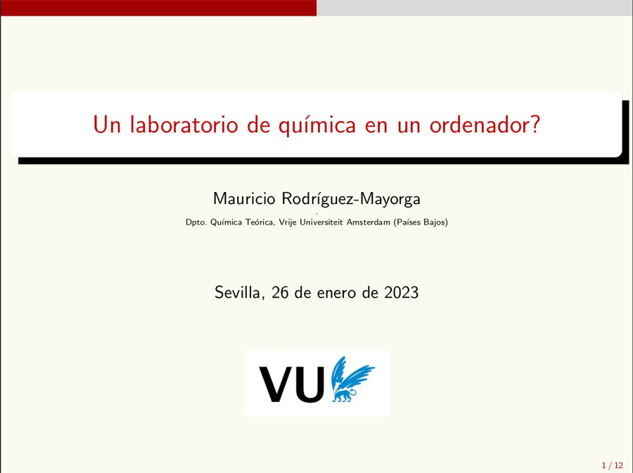
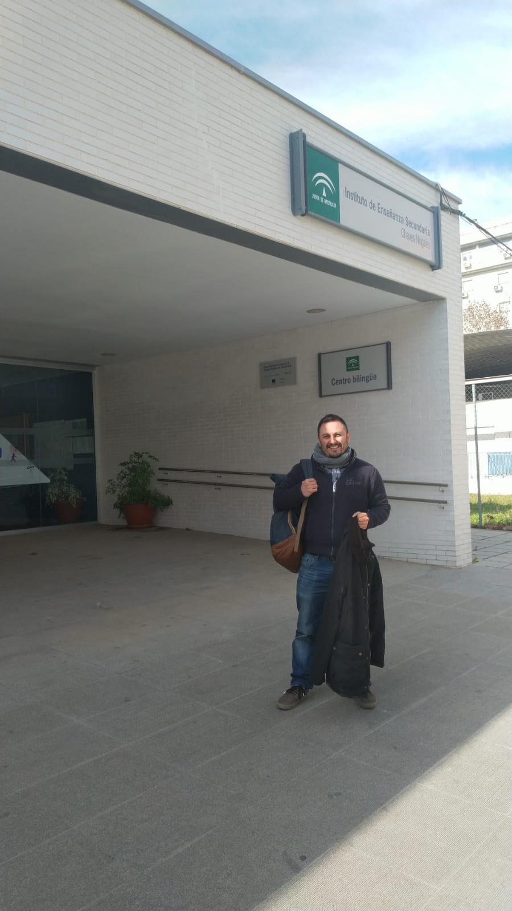

Mauricio Rodríguez-Mayorga
Theoretical and computational chemist
Laboratoire de Physique Théorique, Université de Toulouse / CNRS, France
ORCID · ResearchGate · GitHub
About
I work on electronic structure theory, with a focus on reduced density matrix methods: relativistic density matrix functional theory, correlation indicators, model systems, conceptual DFT and machine learning in quantum chemistry. Most of my code is open source.
Education
- 2023 Master in Teacher Training in High-School, Baccalaureate, Vocational Training, and Languages, University of Sevilla
- 2018 Doctor in Chemistry, University of Girona. Supervised by Prof. Dr. Miquel Solà and Dr. Eduard Matito. Thesis: Reduced density matrices: Development and chemical applications (PDF)
- 2013 Master in Theoretical and Computational Chemistry, University of Girona
- 2012 Degree in Chemistry, University of Granada
Outreach
In January 2023 I gave a talk, “A chemistry laboratory in a computer?”, to high-school students at I.E.S. Chaves Nogales in Seville.


Contact
- Email: marm3.14@gmail.com
- ORCID: 0000-0003-0869-9787
- ResearchGate
- GitHub